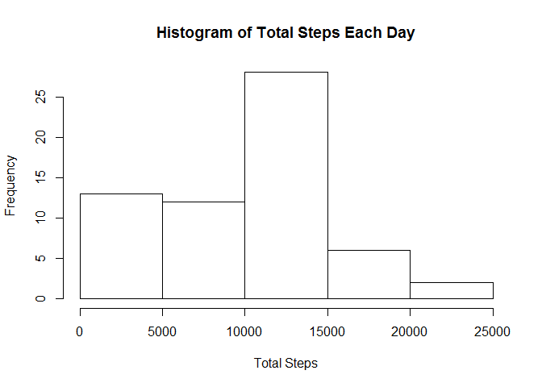
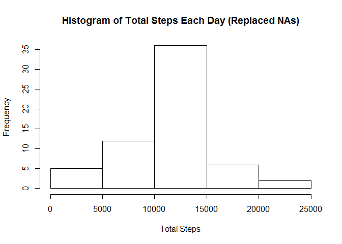
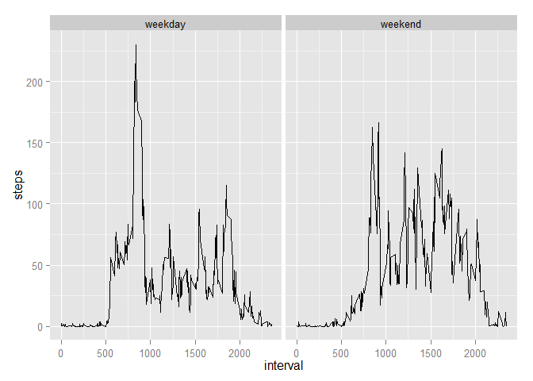

Reproducible Research: Peer Assessment 1
amad989
Friday, December 12, 2014
Loading and preprocessing the data
##Load Data
activity<-read.csv("activity.csv")
##Convert date column to date class
activity$date<-as.Date(activity$date,"%Y-%m-%d")What is mean total number of steps taken per day?
##Calculate total steps each day
sumsteps<-tapply(activity$steps,activity$date,sum,na.rm=T)Histogram of Total Steps Each Day
hist(sumsteps,xlab="Total Steps",main="Histogram of Total Steps Each Day")
avg<-mean(sumsteps)
med<-median(sumsteps)The mean total number of steps taken each day is 9354.2295082.
The median total number of steps taken each day is 10395.
What is the average daily activity pattern?
##Calculate average number of steps across all days for each interval
avgsteps<-tapply(activity$steps,activity$interval,mean,na.rm=T)
##plot average steps versus interval
plot(unique(activity$interval),avgsteps,type="l",xlab="Interval",ylab="Average Steps",main="Average Number of Steps vs. Interval")
##Find the index for the maximum average number of steps
maxsteps<-which.max(avgsteps)The 5-min interval with the maximum number of steps is interval 835.
Imputing missing values
##Find total number of NAs in data frame
numNAs<-sum(is.na(activity))
##Replace NAs with avg for that interval
for (i in 1:length(activity$steps)){
if(is.na(activity$steps[i]))
activity$steps[i]=avgsteps[names(avgsteps)==activity$interval[i]]
}
##Calculate total steps each day
sumsteps<-tapply(activity$steps,activity$date,sum,na.rm=T)
##Histogram of total steps each day
hist(sumsteps,xlab="Total Steps",main="Histogram of Total Steps Each Day (Replaced NAs)")
##mean steps each day
newavg<-mean(sumsteps)
##median steps each day
newmed<-median(sumsteps)After replacing the NAs with the average number of steps for the corresponding interval:
The mean total number of steps taken each day is 1.076618910^{4}.
The median total number of steps taken each day is 1.076618910^{4}.
These values are larger than before the NAs were replaced.
The data is more centered now.
Are there differences in activity patterns between weekdays and weekends?
library(ggplot2)## Warning: package 'ggplot2' was built under R version 3.1.2##vector of dates converted to day of week
weekpart<-weekdays(activity$date)
##convert weekdays to 0 and weekends to 1
for(i in 1:length(weekpart)){
if(weekpart[i]=="Saturday"||weekpart[i]=="Sunday")
weekpart[i]=1
else
weekpart[i]=0
}
##Convert to factor with weekend and weekday levels
weekpart<-factor(weekpart,labels=c("weekday","weekend"))
##Add to data frame
activity<-cbind(activity,weekpart)
##plot average steps versus interval with a weekend panel and weekday panel
p<-ggplot(activity,aes(x=interval,y=steps))+
stat_summary(fun.y=mean,geo="line")+
facet_grid(.~weekpart)
print(p)